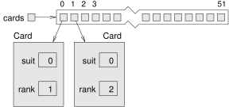

12 Arrays of Objects
During the next three chapters, we will develop programs that work with playing cards and decks of cards. Here is an outline of the road ahead:
In this chapter, we define a
Cardclass and write methods that work with cards and arrays of cards.In Chapter 13.1, we define a
Deckclass that encapsulates an array of cards, and we write methods that operate on decks.In Chapter 14, we introduce a way to define new classes that extend existing classes. Then we use
CardandDeckto implement the game Crazy Eights.
There are 52 cards in a standard deck. Each card belongs to one of four suits and one of 13 ranks. The suits are Clubs, Diamonds, Hearts, and Spades. The ranks are Ace, 2, 3, 4, 5, 6, 7, 8, 9, 10, Jack, Queen, and King.
If you are unfamiliar with traditional playing cards, now would be a good time to get a deck or read through https://en.wikipedia.org/wiki/Standard_52-card_deck.
12.1 Card Objects
If we want to define a class to represent a playing card, it is pretty clear what the instance variables should be: rank and suit. It is not as obvious what types they should be.
One possibility is a String containing things like "Spade" for suits and "Queen" for ranks. A problem with this choice is that it would not be easy to compare cards to see which had a higher rank or suit.
An alternative is to use integers to encode the ranks and suits. By encode, we don’t mean to encrypt or translate into a secret code. We mean to define a mapping between a sequence of numbers and the things we want to represent.
Here is a mapping for suits:
| Clubs | \(\mapsto\) | 0 |
| Diamonds | \(\mapsto\) | 1 |
| Hearts | \(\mapsto\) | 2 |
| Spades | \(\mapsto\) | 3 |
We use the mathematical symbol \(\mapsto\) to make it clear that these mappings are not part of the program. They are part of the program design, but they never appear explicitly in the code.
Each of the numerical ranks (2 through 10) maps to the corresponding integer. For the face cards, we can use the following:
| Ace | \(\mapsto\) | 1 |
| Jack | \(\mapsto\) | 11 |
| Queen | \(\mapsto\) | 12 |
| King | \(\mapsto\) | 13 |
With this encoding, the class definition for the Card type looks like this:
public class Card {
private int rank;
private int suit;
public Card(int rank, int suit) {
this.rank = rank;
this.suit = suit;
}
}The instance variables are private: we can access them from inside this class, but not from other classes.
The constructor takes a parameter for each instance variable. To create a Card object, we use the new operator:
Card threeOfClubs = new Card(3, 0);The result is a reference to a Card that represents the 3 of Clubs.
12.2 Card toString
When you create a new class, the first step is to declare the instance variables and write constructors. A good next step is to write toString, which is useful for debugging and incremental development.
To display Card objects in a way that humans can read easily, we need to “decode” the integer values as words. A natural way to do that is with an array of Strings. For example, we can create the array like this:
String[] suits = new String[4];And then assign values to the elements:
suits[0] = "Clubs";
suits[1] = "Diamonds";
suits[2] = "Hearts";
suits[3] = "Spades";Or we can create the array and initialize the elements at the same time, as you saw in Section 7.3:
String[] suits = {"Clubs", "Diamonds", "Hearts", "Spades"};The memory diagram in Figure 12.1 shows the result. Each element of the array is a reference to a String.
We also need an array to decode the ranks:
String[] ranks = {null, "Ace", "2", "3", "4", "5", "6",
"7", "8", "9", "10", "Jack", "Queen", "King"};The zeroth element should never be used, because the only valid ranks are 1–13. We set it to null to indicate an unused element.
Using these arrays, we can create a meaningful String by using suit and rank as indexes.
String s = ranks[this.rank] + " of " + suits[this.suit];The expression ranks[this.rank] means “use the instance variable rank from this object as an index into the array ranks.” We select the string for this.suit in a similar way.
Now we can wrap all the previous code in a toString method:
public String toString() {
String[] ranks = {null, "Ace", "2", "3", "4", "5", "6",
"7", "8", "9", "10", "Jack", "Queen", "King"};
String[] suits = {"Clubs", "Diamonds", "Hearts", "Spades"};
String s = ranks[this.rank] + " of " + suits[this.suit];
return s;
}When we display a card, println automatically calls toString. The output of the following code is Jack of Diamonds:
Card card = new Card(11, 1);
System.out.println(card);12.3 Class Variables
So far you have seen local variables, which are declared inside a method, and instance variables, which are declared in a class definition, usually before the method definitions. Now it’s time to learn about class variables. They are shared across all instances of the class.
Like instance variables, class variables are defined in a class definition, before the method definitions. But they are identified by the keyword static. Here is a version of Card in which RANKS and SUITS are defined as class variables:
public class Card {
public static final String[] RANKS = {
null, "Ace", "2", "3", "4", "5", "6", "7",
"8", "9", "10", "Jack", "Queen", "King"};
public static final String[] SUITS = {
"Clubs", "Diamonds", "Hearts", "Spades"};
// instance variables and constructors go here
public String toString() {
return RANKS[this.rank] + " of " + SUITS[this.suit];
}
}Class variables are allocated when the program begins and persist until the program ends. In contrast, instance variables like rank and suit are allocated when the program creates new objects, and they are deleted when the object is garbage-collected (see Section 10.9).
Class variables are often used to store constant values that are needed in several places. In that case, they should also be declared as final. Note that whether a variable is static or final involves two separate considerations: static means the variable is shared, and final means the variable (or in this case, the reference) is constant.
Naming static final variables with capital letters is a common convention that makes it easier to recognize their role in the class. In the toString method, we refer to SUITS and RANKS as if they were local variables, but we can tell that they are class variables.
One advantage of defining SUITS and RANKS as class variables is that they don’t need to be created (and garbage-collected) every time toString is called. They may also be needed in other methods and classes, so it’s helpful to make them available everywhere.
12.4 The compareTo Method
As you saw in Section 11.7, it’s helpful to create an equals method to test whether two objects are equivalent:
public boolean equals(Card that) {
return this.rank == that.rank
&& this.suit == that.suit;
}It would also be nice to have a method for comparing cards, so we can tell if one is higher or lower than another. For primitive types, we can use comparison operators like < and > to compare values. But these operators don’t work for object types.
For strings, Java provides a compareTo method, as you saw in Section 6.10. We can write our own version of compareTo for the classes that we define, as we did for the equals method.
Some types are “totally ordered”, which means that you can compare any two values and tell which is bigger. Integers and strings are totally ordered. Other types are “unordered”, which means that there is no meaningful way to say that one element is bigger than another. In Java, the boolean type is unordered; if you try to compare true < false, you get a compiler error.
The set of playing cards is “partially ordered”, which means that sometimes we can compare cards and sometimes not. For example, we know that the 3 of Clubs is higher than the 2 of Clubs, and the 3 of Diamonds is higher than the 3 of Clubs. But which is better, the 3 of Clubs or the 2 of Diamonds? One has a higher rank, but the other has a higher suit.
To make cards comparable, we have to decide which is more important: rank or suit. The choice is arbitrary, and it might be different for different games. But when you buy a new deck of cards, it comes sorted with all the Clubs together, followed by all the Diamonds, and so on. So for now, let’s say that suit is more important. With that decided, we can write compareTo as follows:
public int compareTo(Card that) {
if (this.suit < that.suit) {
return -1;
}
if (this.suit > that.suit) {
return 1;
}
if (this.rank < that.rank) {
return -1;
}
if (this.rank > that.rank) {
return 1;
}
return 0;
}compareTo returns -1 if this is a lower card, +1 if this is a higher card, and 0 if this and that are equivalent. It compares suits first. If the suits are the same, it compares ranks. If the ranks are also the same, it returns 0.
12.5 Cards Are Immutable
The instance variables of Card are private, so they can’t be accessed from other classes. We can provide getters to allow other classes to read the rank and suit values:
public int getRank() {
return this.rank;
}
public int getSuit() {
return this.suit;
}Whether or not to provide setters is a design decision. If we did, cards would be mutable, so you could transform one card into another. That is probably not a feature we want, and in general, mutable objects are more error-prone. So it might be better to make cards immutable. To do that, all we have to do is not provide any modifier methods (including setters).
That’s easy enough, but it is not foolproof, because a fool might come along later and add a modifier. We can prevent that possibility by declaring the instance variables final:
public class Card {
private final int rank;
private final int suit;
...
}You can initialize these variables inside a constructor, but if someone writes a method that tries to modify them, they’ll get a compiler error. This kind of safeguard helps prevent future mistakes and hours of debugging.
12.6 Arrays of Cards
Just as you can create an array of String objects, you can create an array of Card objects. The following statement creates an array of 52 cards. Figure 12.2 shows the memory diagram for this array.
Card[] cards = new Card[52];Card array.
Although we call it an “array of cards”, the array contains references to cards; it does not contain the Card objects themselves. Initially the references are all null.
Even so, you can access the elements of the array in the usual way:
if (cards[0] == null) {
System.out.println("No card yet!");
}But if you try to access the instance variables of non-existent Card objects, you will get a NullPointerException:
System.out.println(cards[0].rank); // NullPointerExceptionThat code won’t work until we put cards in the array. One way to populate the array is to write nested for loops:
int index = 0;
for (int suit = 0; suit <= 3; suit++) {
for (int rank = 1; rank <= 13; rank++) {
cards[index] = new Card(rank, suit);
index++;
}
}The outer loop iterates suits from 0 to 3. For each suit, the inner loop iterates ranks from 1 to 13. Since the outer loop runs 4 times, and the inner loop runs 13 times for each suit, the body is executed 52 times.
We use a separate variable index to keep track of where in the array the next card should go. Figure 12.3 shows what the array looks like after the first two cards have been created.

Card array with two cards.
When you work with arrays, it is convenient to have a method that displays the contents. You have seen the pattern for traversing an array several times, so the following method should be familiar:
public static void printDeck(Card[] cards) {
for (Card card : cards) {
System.out.println(card);
}
}Since cards has type Card[], pronounced “card array”, an element of cards has type Card. So println invokes the toString method in the Card class.
Then again, we don’t have to write our own printDeck method. The Arrays class provides a toString method that invokes toString on the elements of an array and concatenates the results:
System.out.println(Arrays.toString(cards))12.7 Sequential Search
The next method we’ll write is search, which takes an array of cards and a Card object as parameters. It returns the index where the Card appears in the array, or -1 if it doesn’t. This version of search uses the algorithm in Section 7.5, which is called sequential search:
public static int search(Card[] cards, Card target) {
for (int i = 0; i < cards.length; i++) {
if (cards[i].equals(target)) {
return i;
}
}
return -1;
}The method returns as soon as it discovers the card, which means we don’t have to traverse the entire array if we find the target. If we get to the end of the loop, we know the card is not in the array.
If the cards in the array are not in order, there is no way to search faster than sequential search. We have to look at every card, because otherwise we can’t be certain the card we want is not there. But if the cards are in order, we can use better algorithms.
Sequential search is relatively inefficient, especially for large arrays. If you pay the price to keep the array sorted, finding elements becomes much easier.
12.8 Binary Search
When you look for a word in a dictionary, you don’t search page by page from front to back. Since the words are in alphabetical order, you probably use a binary search algorithm:
Start on a page near the middle of the dictionary.
Compare a word on the page to the word you are looking for. If you find it, stop.
If the word on the page comes before the word you are looking for, flip to somewhere later in the dictionary and go to step 2.
If the word on the page comes after the word you are looking for, flip to somewhere earlier in the dictionary and go to step 2.
This algorithm is much faster than sequential search, because it rules out half of the remaining words each time you make a comparison. If at any point you find two adjacent words on the page, and your word comes between them, you can conclude that your word is not in the dictionary.
Getting back to the array of cards, we can write a faster version of search if we know the cards are in order:
public static int binarySearch(Card[] cards, Card target) {
int low = 0;
int high = cards.length - 1;
while (low <= high) {
int mid = (low + high) / 2; // step 1
int comp = cards[mid].compareTo(target);
if (comp == 0) { // step 2
return mid;
} else if (comp < 0) { // step 3
low = mid + 1;
} else { // step 4
high = mid - 1;
}
}
return -1;
}First, we declare low and high variables to represent the range we are searching. Initially, we search the entire array, from 0 to cards.length - 1.
Inside the while loop, we repeat the four steps of binary search:
Choose an index between
lowandhigh—call itmid—and compare the card atmidto the target.If you found the target, return its index (which is
mid).If the card at
midis lower than the target, search the range frommid + 1tohigh.If the card at
midis higher than the target, search the range fromlowtomid - 1.
If low exceeds high, there are no cards in the range, so we terminate the loop and return -1.
This algorithm depends on only the compareTo method of the object, so we can use this code with any object type that provides compareTo.
12.9 Tracing the Code
To see how binary search works, it’s helpful to add the following print statement at the beginning of the loop:
System.out.println(low + ", " + high);Using a sorted deck of cards, we can search for the Jack of Clubs like this:
Card card = new Card(11, 0);
System.out.println(binarySearch(cards, card));We expect to find this card at position 10 (since the Ace of Clubs is at position 0). Here is the output of binarySearch:
0, 51
0, 24
0, 11
6, 11
9, 11
10You can see the range of cards shrinking as the while loop runs, until eventually index 10 is found. If we search for a card that’s not in the array—like new Card(15, 1), or the 15 of Diamonds—we get the following:
0, 51
26, 51
26, 37
26, 30
26, 27
-1Each time through the loop, we cut the distance between low and high in half. After \(k\) iterations, the number of remaining cards is \(52 / 2^k\). To find the number of iterations it takes to complete, we set \(52 / 2^k = 1\) and solve for \(k\). The result is \(\log_2 52\), which is about 5.7. So we might have to look at 5 or 6 cards, as opposed to all 52 if we did a sequential search.
More generally, if the array contains \(n\) elements, binary search requires \(\log_2 n\) comparisons, and sequential search requires \(n\). For large values of \(n\), binary search is substantially faster.
12.10 Vocabulary
- encode:
-
To represent one set of values using another set of values by constructing a mapping between them.
- class variable:
-
A variable declared within a class as
static. There is only one copy of a class variable, no matter how many objects there are. - sequential search:
-
An algorithm that searches array elements, one by one, until a target value is found.
- binary search:
-
An algorithm that searches a sorted array by starting in the middle, comparing an element to the target, and eliminating half of the remaining elements.
12.11 Exercises
The code for this chapter is in the ch12 directory of ThinkJavaCode2. See page for instructions on how to download the repository. Before you start the exercises, we recommend that you compile and run the examples.
Exercise 12.1. Encapsulate the deck-building code from Section 12.6 in a method called makeDeck that takes no parameters and returns a fully populated array of Cards.
Exercise 12.2. In some card games, Aces are ranked higher than Kings. Modify the compareTo method to implement this ordering.
Exercise 12.3. In Poker a “flush” is a hand that contains five or more cards of the same suit. A hand can contain any number of cards.
Write a method called
suitHistthat takes an array of cards as a parameter and returns a histogram of the suits in the hand. Your solution should traverse the array only once, as in Section 7.7.Write a method called
hasFlushthat takes an array of cards as a parameter and returnstrueif the hand contains a flush (andfalseotherwise).A “royal flush” includes the Ace, King, Queen, Jack, and 10 (all in the same suit). Write a method called
hasRoyalthat determines whether an array of cards contains a royal flush.
Exercise 12.4. Working with cards is more fun if you can display them on the screen. If you have not already read Appendix 20 about 2D graphics, you should read it before working on this exercise. In the code directory for this chapter, ch12, you will find the following:
**cardset-oxymoron
A directory containing images of playing cards.**CardTable.java
A sample program that demonstrates how to read and display images.
**CardTable.java* demonstrates the use of a 2D array; specifically, an array of card images. The declaration looks like this:*
private Image[][] images;The variable images refers to a 2D array of Image objects, which are defined in the java.awt package. Here’s the code that creates the array itself:
images = new Image[14][4];The array has 14 rows (one for each rank, plus an unused row for rank 0) and 4 columns (one for each suit). Here’s the loop that populates the array:
String cardset = "cardset-oxymoron";
String suits = "cdhs";
for (int suit = 0; suit <= 3; suit++) {
char c = suits.charAt(suit);
for (int rank = 1; rank <= 13; rank++) {
String s = String.format("%s/%02d%c.gif",
cardset, rank, c);
images[rank][suit] = new ImageIcon(s).getImage();
}
}The variable cardset is the name of the directory that contains the image files. suits is a string that contains the single-letter abbreviations for the suits. These strings are used to assemble s, which contains the filename for each image. For example, when rank=1 and suit=2, the value of s is "cardset-oxymoron/01h.gif", which is an image of the Ace of Hearts.
The last line of the loop reads the image file, extracts an Image object, and assigns it to a location in the array, as specified by the indexes rank and suit. For example, the image of the Ace of Hearts is stored in row 1, column 2.
If you compile and run CardTable.java, you should see images of a deck of cards laid out on a green table. You can use this class as a starting place to implement your own card games.
As a starting place, try placing cards on the table in the starting configuration for the solitaire game Klondike (https://en.wikipedia.org/wiki/Klondike_(solitaire)).
You can get the image for the back of the card by reading the file back192.gif.